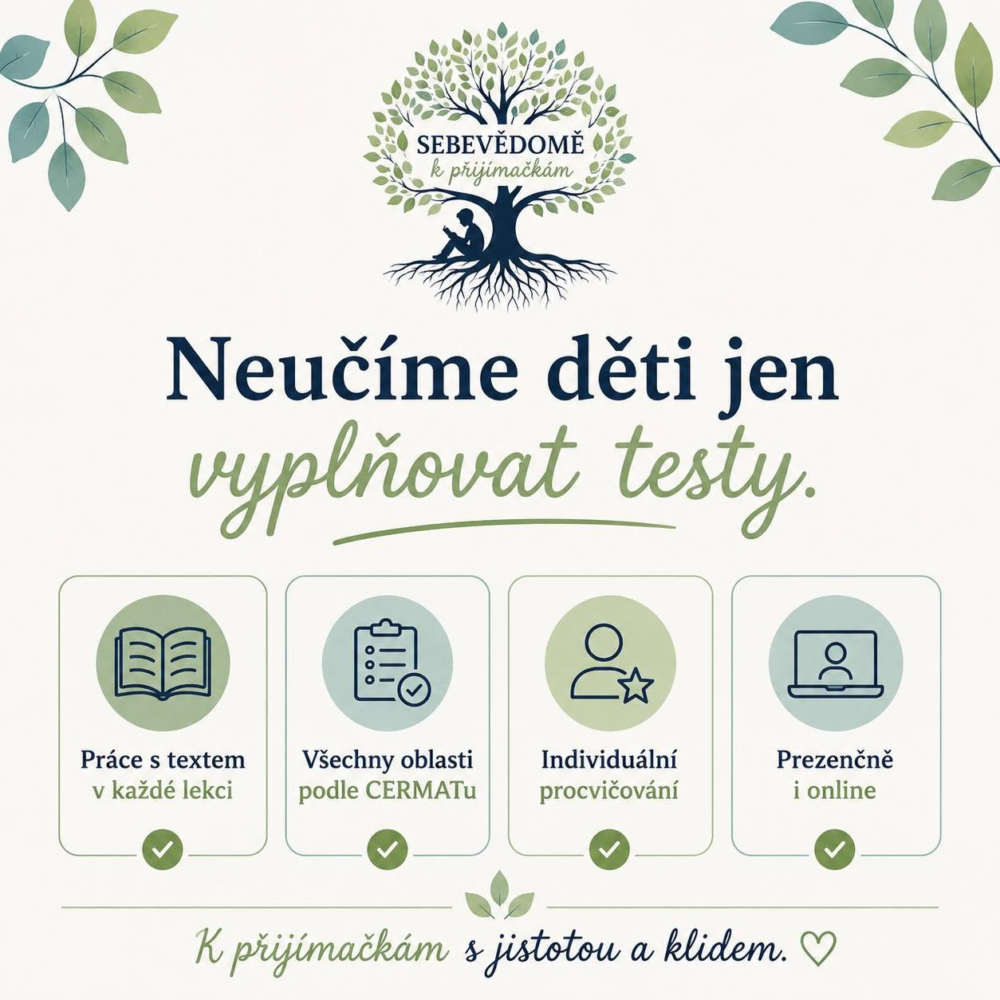

Nejčastější chyby u přijímačky

Za dobu, kdy se věnujeme přípravě dětí na přijímací zkoušky, se u rodin opakuje pár stejných chyb. Dobrá zpráva je, že všem se dá docela snadno předejít – stačí o nich vědět předem.
1. Příprava jen formou testů
Vyplňování cvičných testů je užitečné, ale pokud je to jediná forma přípravy, dítě se často naučí spíš „uhodnout“ správnou odpověď, než látce skutečně rozumět. Chybí mu pak jistota v úlohách, které jsou zadané trochu jinak, než na co je zvyklé.
2. Podcenění porozumění textu
U češtiny se pozornost často soustředí na gramatiku a pravopis, zatímco práce s textem – porozumění, vyvozování informací, práce se slovní zásobou – zůstává na okraji. Právě tahle oblast je ale u přijímačky klíčová a dá se jí těžko „nabiflovat“ na poslední chvíli.
3. Odklad přípravy na poslední chvíli
Čím později příprava začne, tím větší je tlak na dítě i na rodinu. Několik měsíců intenzivního učení navíc často znamená víc stresu než reálného přínosu – klidnější a rozložená příprava funguje mnohem lépe.
4. Opomíjení psychické stránky
Znalosti jsou jen půlka úspěchu. Druhá půlka je to, jak se dítě zvládne se zkouškou psychicky vyrovnat – jestli si věří, umí zvládat nervozitu a věří, že zvládne i úlohu, kterou nečekalo.
5. Volba školy bez zapojení dítěte
Když o výběru střední školy rozhoduje především rodič, dítě se s volbou často hůř identifikuje. Zapojení dítěte do rozhodování – s ohledem na jeho zájmy a silné stránky – zvyšuje šanci, že bude na vybrané škole spokojené.
Chcete se těmto chybám vyhnout?
Přihlásit dítě